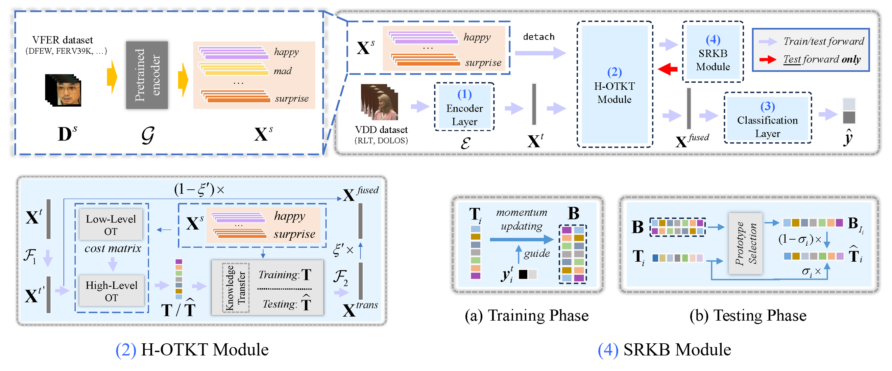
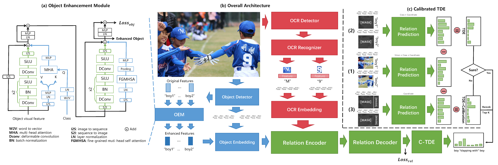
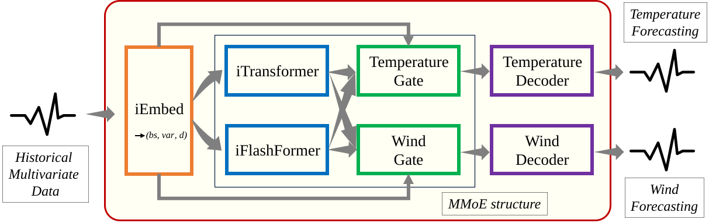
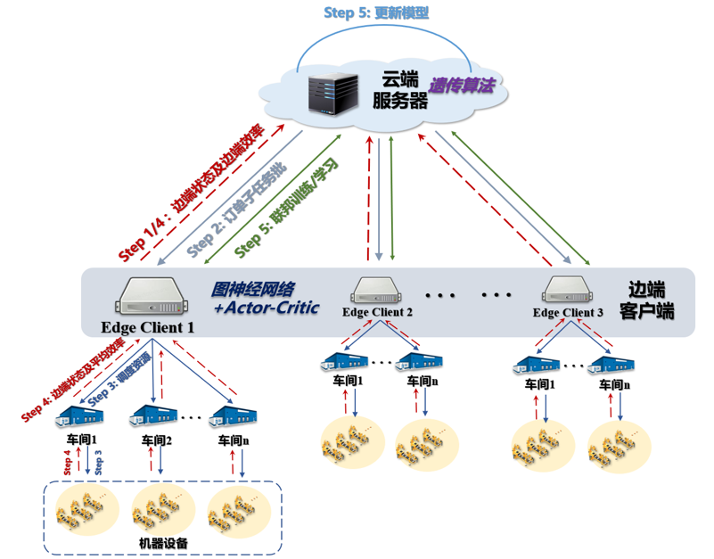
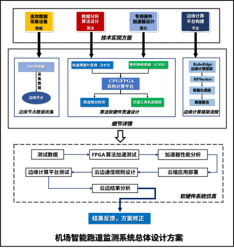

|
I am now a master's student at the School of Future Technology in South China University of Technology (SCUT). Currently, my research focuses on transfer learning, affective computing, multimodal representation learning. I am also interested in other multimodal generation tasks (such as text to image/video generation, music generation etc.), and other applicable research fields. My research goal is to create some AI-based applications that promote interdisciplinary integration while benefiting society and humanity. During the study in SCUT, I am fortunate to be advised by Prof. Ye Liu (SCUT) and Prof. Xuetao Tian (BNU). I am grateful for my undergraduate experience learning from WHUT and my 4 years growing on project competition abilities mentored by Prof. Xing Liu and research experiences mentored by Prof. Anna Zhu. I am now applying for 2026 fall PhD. And my CV can be downloaded from here and here(中文). Please connect me if you are interested in me. Educational Papers Projects Skills Teaching Outreach & Service Selected Honors Miscellaneous |

|
|
|
- 2023.09 - 2026.06: South China University of Technology (华南理工大学, SCUT), Guangzhou, Master
- 2019.09 - 2023.06: Wuhan University of Technology (武汉理工大学, WHUT), Wuhan, Bachelor
Papers |
|
[3]
Ye Liu*, Zihan Ji*, Xuetao Tian ICCV 2025 Submission (Under Review) |
|
[2]
Zihan Ji, Xuetao Tian, Ye Liu Proceedings of the AAAI Conference on Artificial Intelligence (AAAI 2025) [Oral] AbstractAbstract: The scarcity of high-quality large-scale labeled datasets poses a huge challenge for employing deep learning models in video deception detection. To address this issue, inspired by the psychological theory on the relation between deception and expressions, we propose a novel method called AFFAKT in this paper, which enhances the classification performance by transferring useful and correlated knowledge from a large facial expression dataset. Two key challenges in knowledge transfer arise: 1) how much knowledge of facial expression data should be transferred and 2) how to effectively leverage transferred knowledge for the deception classification model during inference. Specifically, the optimal relation mapping between facial expression classes and deception samples is firstly quantified using proposed H-OTKT module and then transfers knowledge from the facial expression dataset to deception samples. Moreover, a correlation prototype within another proposed module SRKB is well designed to retain the invariant correlations between facial expression classes and deception classes through momentum updating. During inference, the transferred knowledge is fine-tuned with the correlation prototype using a sample-specific re-weighting strategy. Experimental results on two deception detection datasets demonstrate the superior performance of our proposed method. The interpretability study reveals high associations between deception and negative affections, which coincides with the theory in psychology. |
|
[1]
Xinyu Zhou*, Zihan Ji*, Anna Zhu Chinese Conference on Pattern Recognition and Computer Vision (PRCV 2024) AbstractAbstract: Scene Graph Generation (SGG) is the task of mapping an image or a video into a semantic structural scene graph automatically for better scene understanding. It requires detecting objects and building their relations. Current SGG methods ignore an essential element of the scene images, i.e., scene text. To better utilize this information for more comprehensive image understanding, we introduce it into the SGG task and propose an OCR-aware Scene Graph Generation (OSGG) baseline approach. To solve the training bias in both SGG and OSGG tasks, we present a novel learning strategy based on causal inference to remove the bad bias and make the prediction process more rational. The feature representations of objects are one of the keys to these tasks but generally extracted from bounding boxes, which are coarse. To obtain more fine-grained object features, we propose a visual feature enhancement module that fuses linguistic modality and integrates cross-modal attention. For evaluation, we provide a new OCR-aware dataset, TextCaps-SG, to benchmark the performance. Experimental results on this dataset and the Visual Gnome (VG) dataset demonstrate the effectiveness of each designed module and verify the superiority of our proposed method over other state-of-the-art methods. Moreover, we apply our generated OSG to cross-modal retrieval tasks. Experiments conducted on COCO TextCaps (CTC) and TextCaps-SG further illustrate that our method significantly outperforms the previous SG-based retrieval methods and could achieve competitive or better results than some large-scale models. |
|
|
Contest: Automatic station real-time joint prediction based on meteorological big data (2024.06 - 2024.08, Mentor: Prof. Ye Liu)
The official contest page can be found here and the detailed question description can be found here.

Key Points
- The MMoE framework improves the diversity of model learning sequence knowledge.
- The "Invert" idea has high effectiveness for this dataset. (THUML, iTransformer)
- Integrating a large number of models to improve algorithm robustness.
- Details of this contest project can be found here.
Reward: National Third Prize of 中国高校计算机大赛——大数据挑战赛 (2024)
Flexible Job Shop Scheduling Based on Edge Computing and Reinforcement Learning (2022.01 - 2022.07, Mentor: Prof. Xing Liu)
In response to the shortcomings of algorithm, data fusion, and privacy protection in cloud edge collaborative workshop scheduling, the project constructs an intelligent collaborative computing system: a GPU accelerated genetic algorithm integrated with BP neural network is designed in the cloud to achieve efficient cloud edge task decoupling and splitting; The edge adopts GNN-Reinforcement Learning fused model to enhance the dynamic adaptability of tasks. Implement data privacy protection and cross domain integration through a federated learning framework, and build a complete cloud edge intelligent collaborative scheduling solution.

Project Contents
- Study the improvement of genetic algorithm and decoupling the scheduling process of cloud edge tasks to enhance the scheduling efficiency of the algorithm.
- Research and design a hardware accelerator specifically designed for GPUs, which integrates software and hardware to improve the computational speed and accuracy of algorithms.
- (My part) Research deep learning, reinforcement learning and other algorithms, and integrate them into workshop scheduling algorithms to improve the adaptive ability of scheduling systems to different application scenarios.
- Research on cloud edge collaborative federated learning to protect edge data privacy and enhance edge data fusion.
Reward: National Third Prize of 中国大学生服务外包创新创业大赛 (2022)
Airport Intelligent Runway Monitoring System (2021.12 - 2022.04, Mentor: Prof. Xing Liu)
This project develops an intelligent airport runway management system. It replaces traditional sensors with fiber-optic sensors to enhance anti-interference capabilities and reduce data loss. The system employs CNN for real-time aircraft/vehicle trajectory tracking and FFT algorithms for runway deformation detection. FPGA-based accelerators optimize algorithm efficiency, while the KubeEdge framework enables edge computing to process data locally, minimizing cloud transmission delays. The solution addresses limitations of traditional sensors, low detection accuracy, and real-time big data challenges, achieving faster data processing than generation speeds. It ensures safe runway operations through cloud-edge collaboration and integrated monitoring, effectively resolving risks like surface irregularities and unauthorized intrusions.

Project Contents
- (My part) Implementation of an Airport Vehicle Trajectory Tracking Algorithm: Utilizing CNN to monitor airport runways in real-time and track the trajectories of aircraft and tow vehicles on the runway.
- (My part) Implementation of an Airport Runway Surface Step Detection Algorithm: Utilizing FFT to monitor runway surface conditions in real-time and detect surface steps.
- Development of an Edge-Side FPGA Accelerator for Algorithm Optimization: Utilizing FPGA hardware acceleration to enhance the execution efficiency of the FFT algorithm and reduce its processing time.
- Edge-Cloud Data Fusion Based on KubeEdge: Deploying a containerized scheduling platform using KubeEdge to enable real-time transmission of airport runway detection data from edge nodes to the cloud. The cloud then integrates detection results from multiple fiber-optic regions to achieve real-time global monitoring of the airport.
Reward: Provincial First Prize of 中国大学生计算机设计大赛 (2022)
|
|
- Python (PyTorch etc.), C/C++, Java;
- Windows, Ubuntu;
- Git, Docker;
- SQL, MySQL;
- Microsoft Office (Word, Excel, PowerPoint), Origin, VSCode, PyCharm;
|
|
- Undergraduate Course TA: Introduction to Engineering Practice (2023 Fall)
|
|
Reviewing
- ICME 2024, 2025.
|
|
- Outstanding Graduates (2023)
- Excellent Student Cadre (2023)
- Merit Student (2020, 2021, 2022)
- The Second Prize Scholarship from School (2020, 2021, 2022)
|
|
- Thanks to the trust of my mentor, I am currently managing and maintaining the servers of our research group.

- I often play badminton when my research tasks are not too demanding.
- I really enjoy music, especially classical music. Since starting university, I have been teaching myself the piano.

|
Last updated on April 9, 2025 |